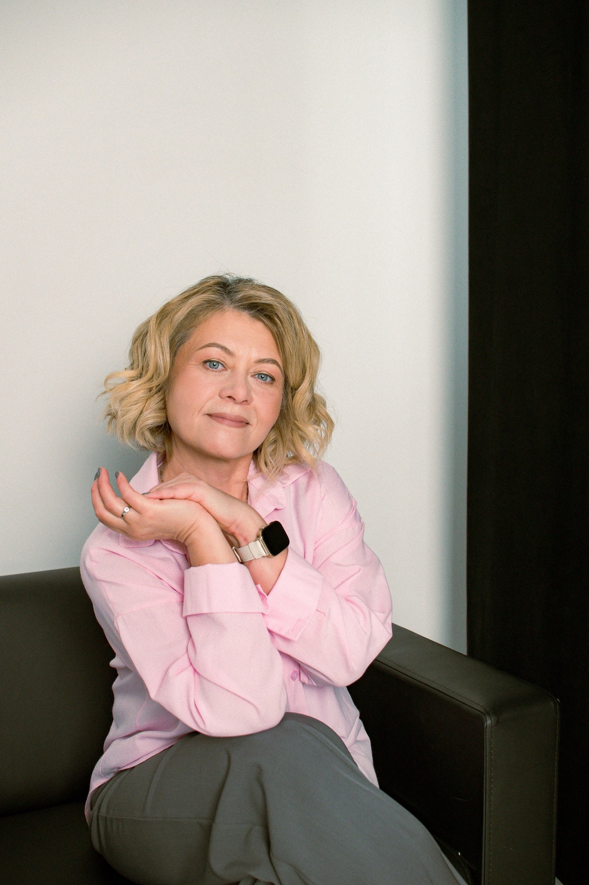
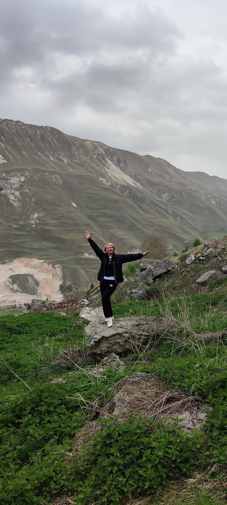

Обсудить запрос
Уточнить цель обращения и получить объяснение доступных форматов.
Коуч · Регрессолог · Психолог
Здесь будет личный рассказ Татьяны о профессиональном пути, её подходе и о том, как она выстраивает взаимодействие с человеком.
Обсудить встречу

Этот текст нужно подготовить вместе с Татьяной, сохранив её собственный голос и конкретные факты.
В финальной версии здесь появятся ответы на вопросы: как Татьяна пришла к этой деятельности, какие темы считает важными в работе, как описывает свою роль и какие принципы взаимодействия считает обязательными.
Перечень обучения будет представлен после проверки точных названий программ, документов и согласования формулировок. Документы о прохождении отдельных курсов не будут называться дипломом о базовом психологическом образовании.
До начала встречи человек должен понимать предлагаемый формат и иметь возможность задать вопросы.
Уточнить цель обращения и получить объяснение доступных форматов.
Заранее обсудить стоимость, продолжительность, формат и возможные ограничения.
Участие в конкретной практике остаётся добровольным решением человека.
Это демонстрация расположения будущего чата. Автоматические ответы и передача обращения Татьяне будут добавлены отдельно.